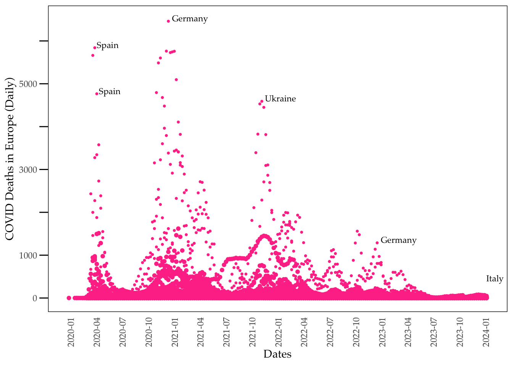

# Clear environment
rm(list = ls())
# libraries
library(ggplot2)
library(dplyr)
Attaching package: 'dplyr'The following objects are masked from 'package:stats':
filter, lagThe following objects are masked from 'package:base':
intersect, setdiff, setequal, unionlibrary(lubridate)
Attaching package: 'lubridate'The following objects are masked from 'package:base':
date, intersect, setdiff, unionlibrary(scales)
# Load the data from OWID GitHub
owideu <- read.csv("https://github.com/owid/covid-19-data/blob/master/public/data/owid-covid-data.csv?raw=true")
# Deselect cases/rows with OWID
owideu <- owideu[!grepl("^OWID", owideu$iso_code), ]
# Subset data for Europe
owideu <- subset(owideu, continent == "Europe")
# Convert the date column to Date type
owideu$date <- as.Date(owideu$date)
# Extract the year and month from the date
owideu$year <- format(owideu$date, "%Y")
owideu$month <- format(owideu$date, "%m")
# Further subset the data to remove zero deaths and dates before 2024-01-20
tt <- subset(owideu, new_deaths != 0 & date < "2024-01-20")
# Subset the data for specific countries and years, focusing on Germany 2020 and December 2022
outliers <- tt %>%
filter((location == "Spain" & year == "2020") |
(location == "Germany" & (year == "2020" | (year == "2022" & month == "12"))) |
(location == "Ukraine" & year == "2021") |
(location == "Italy" & year == "2024"))
# For Spain 2020, select the highest and 3rd highest new deaths, and for others, select the highest
outliers <- outliers %>%
group_by(location, year) %>%
filter((location == "Spain" & year == "2020" & new_deaths %in% sort(new_deaths, decreasing = TRUE)[c(1, 3)]) |
(location != "Spain" & new_deaths == max(new_deaths, na.rm = TRUE))) %>%
ungroup()
# Create the base ggplot
ggplot() +
# Germany points (all data for Germany for context)
geom_point(data = subset(tt, location == "Germany"), aes(x = as.Date(date), y = new_deaths), color = "violetred1", size = 0.7) +
# Spain points
geom_point(data = subset(tt, location == "Spain"), aes(x = as.Date(date), y = new_deaths), color = "violetred1", size = 0.7) +
# Ukraine points
geom_point(data = subset(tt, location == "Ukraine"), aes(x = as.Date(date), y = new_deaths), color = "violetred1", size = 0.7) +
# France points
geom_point(data = subset(tt, location == "France"), aes(x = as.Date(date), y = new_deaths), color = "violetred1", size = 0.7) +
# All points scaled down by a factor of 6
geom_point(data = tt, aes(x = as.Date(date), y = new_deaths / 6), color = "violetred1", size = 1.4) +
# Customize the axes and labels
labs(x = "Dates", y = "COVID Deaths in Europe (Daily)") +
# Customize the date axis and set dynamic date breaks
scale_x_date(labels = date_format("%Y-%m"), breaks = pretty_breaks(n = 30)) +
# Custom y-axis with breaks up to 6000
scale_y_continuous(breaks = c(0, 1000, 2000, 3000, 4000, 5000, 6000), limits = c(0, 6500),
labels = c("0", "1000", "", "3000", "", "5000", "")) +
# Apply a minimal theme with customizations for better aesthetics
theme_minimal(base_family = "Palatino") +
theme(
axis.text.x = element_text(angle = 90, hjust = 1, family = "Palatino"),
axis.text.y = element_text(family = "Palatino"),
axis.title.x = element_text(family = "Palatino"),
axis.title.y = element_text(family = "Palatino"),
panel.grid = element_blank(), # Remove background grid
panel.border = element_rect(fill = NA, color = "black"), # Make axis lines are visible
axis.ticks.y = element_line(color = "black"), # Show y-axis ticks
axis.ticks.length.y = unit(3, "mm"), # Lengthen y-axis ticks
axis.ticks.x = element_blank() # Remove x-axis ticks
) +
# Adding labels for the outliers
geom_text(data = outliers, aes(x = as.Date(date), y = new_deaths, label = location),
vjust = 0, hjust = -0.1, color = "black", size = 3, family = "Palatino") # Position the label to the right of the point